RESUMO
RESUMOEm 2018 iniciamos um projeto com um questionário sobre o manejo de culturas e plantas daninhas no Brasil. O questionário teve aproximadamente 350 participantes de todas as regiões do Brasil. As respostas dos participantes foram analisadas e o resultado acabou de ser publicado na revista Weed Technology, da Sociedade Americana de Plantas Daninhas:
RESUMO
Um questionário foi conduzido entre abril e junho de 2018 para entender as percepções das partes interessadas e os desafios sobre os sistemas de cultivo e manejo de plantas daninhas no Brasil. As culturas dominantes manejadas pelos respondentes do questionário foram soja (73%) e milho (66%). Aproximadamente 75% dos respondentes cultivaram ou manejam sistemas de cultivo anual com duas a três safras cultivadas por ano em sucessão. Dezoito por cento dos entrevistados manejam apenas sistemas de cultivo irrigado e mais de 60% dos entrevistados adotam o plantio direto como prática padrão. De acordo com os entrevistados, as cinco principais espécies de plantas daninhas problemáticas nos sistemas de cultivo brasileiros são a buva, a capim-amargoso, a corda-de-viola, o capim-pé-de-galinha e a trapoeraba. Entre as nove espécies documentadas com resistência ao glifosato no Brasil, a buva e o capim amargoso foram relatadas como as plantas daninhas mais preocupantes. Além do glifosato, 31 e 78% dos entrevistados manejam plantas daninhas resistentes ao inibidor da acetil-CoA carboxilase (ACCase) e / ou ao inibidor da acetolactato sintase (ALS), respectivamente. Além dos herbicidas, 45% dos entrevistados usam estratégias de controle de plantas daninhas mecânicas e 75% usam estratégias culturais (por exemplo, culturas de cobertura, plantio direto, rotação / sucessão de culturas). Sessenta e um por cento dos entrevistados adotam culturas de cobertura para suprimir plantas daninhas e melhorar as propriedades físicas e químicas do solo. Aproximadamente 60% dos respondentes da pesquisa pretendem adotar as culturas resistentes ao dicamba (Xtend) ou 2,4-D (Enlist), quando disponíveis. Os resultados apresentados nesse trabalho podem ajudar os profissionais, acadêmicos, indústria e formuladores de políticas a entender melhor o que há de bom e ruim nos atuais sistemas de cultivo e práticas de manejo de plantas daninhas adotadas no Brasil, e ajustar as prioridades e necessidades de pesquisa, educação e tecnologias no futuro.
Primeiramente gostaria de agradecer a todos que participaram respondendo e compartilhando o questionário em 2018. Também gostaria de agradecer os co-autores do projeto: André da Rosa Ulguim (professor da Universidade Federal de Santa Maria - UFSM) e Anelise Lencina (pós-graduanda da UFSM).
As respostas foram excelentes e o resultado do projeto foi um sucesso. O artigo ainda está no prelo da revista mas já é possivel baixá-lo no site da Weed Technology:

Clique aqui para baixar o artigo
Acredito que a grande maioria não consegue baixar o artigo, pois é necessário ter o acesso via pagamanto ou via Sociedade Americana de Plantas Daninha. Mas não se preocupe, quem tiver interesse em ter o artigo pode me enviar um e-mail: maxweloliveira@unoeste.br, assim que a versão final for publicada eu envio via e-mail para os interessados.
Quando o questionário foi distribuido em 2018, fizemos a promessa de compartilhar os resultados para os respondentes. O objetivo dessa postagem é mostrar de uma forma simplificada e em português os resultados do questionário apresentados no artigo.
Primeiramente eu tenho que explicar que todos os dados gerados nesse trabalho são relacionado apenas as respostas obtidas dos respondentes do questionário. Por exemplo, a maioria dos respondentes são da região sul (43%) do Brasil, seguida do sudeste (38%), centro-oeste (23%), nordeste (8%), norte (4%). Por isso, as respostas apresentadas nesse trabalho foram estratificadas por regiões do Brasil. O total de hectares manejados pelos respondentes somam 5,4 milhões, que é uma parcela significativa da área agrícola no Brasil. A maioria dos respondentes são agrônomos (69%), respresentantes em empresa (22%), universidade (22%), produtores rurais (21%) e consultores independentes (7%).
Antes de começar:
As respostas foram organizadas em % de respostas ou % de respondentes
Algumas perguntas eram de multipla escolha, nesse caso a somatória da % de algumas respostas pode passar de 100%
Como mencionado anteriormente, os dados foram agrupados por regiões brasileiras
As respostas estão agrupadas em Manejo de Sistemas de Cultivo e Manejo de Plantas Daninhas
Nessa postagem o resultado é apresentado com a pergunta e a resposta em forma figura. Sendo a figura auto explicativa
Nessa primeira parte estão as perguntas e respostas relacionadas aos sistemas de cultivo:

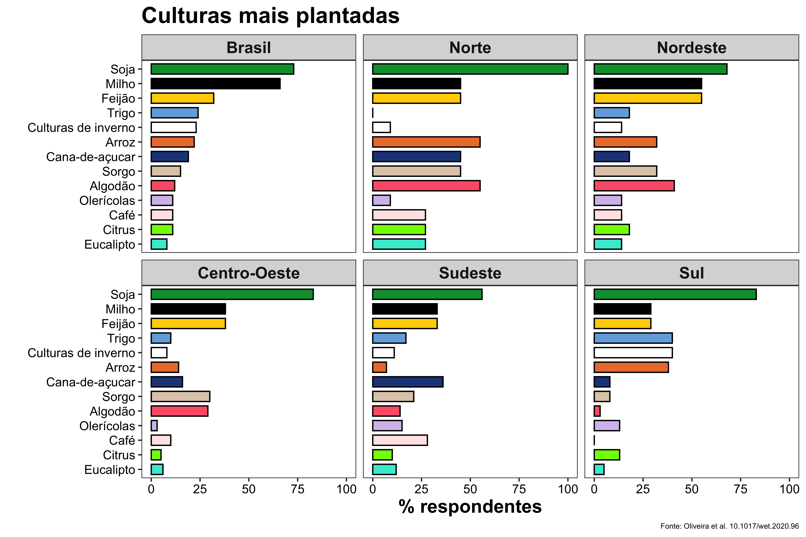
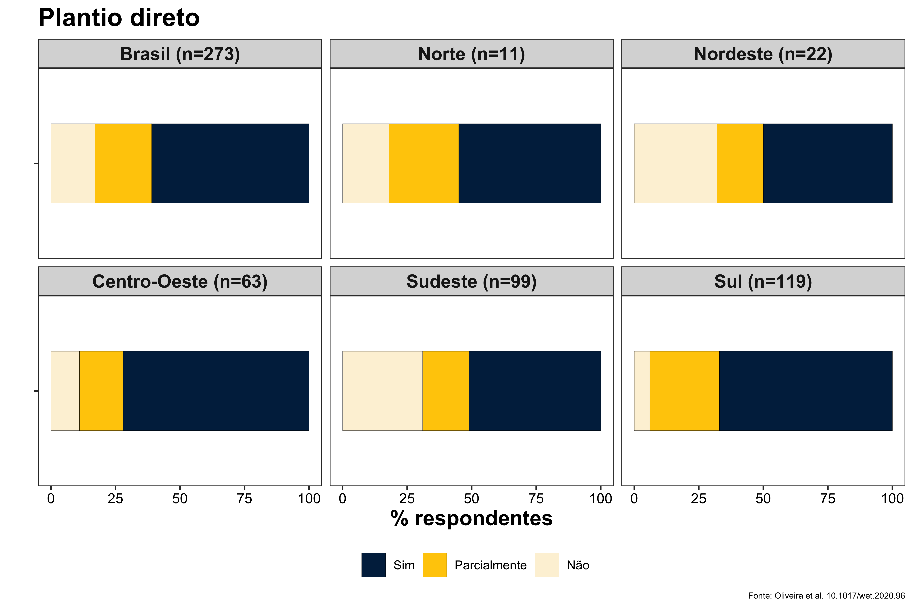
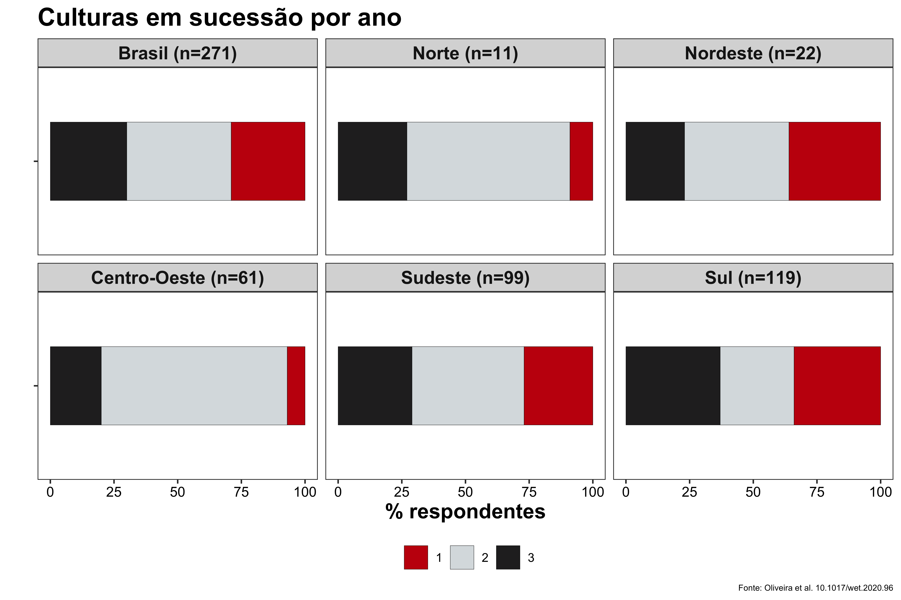
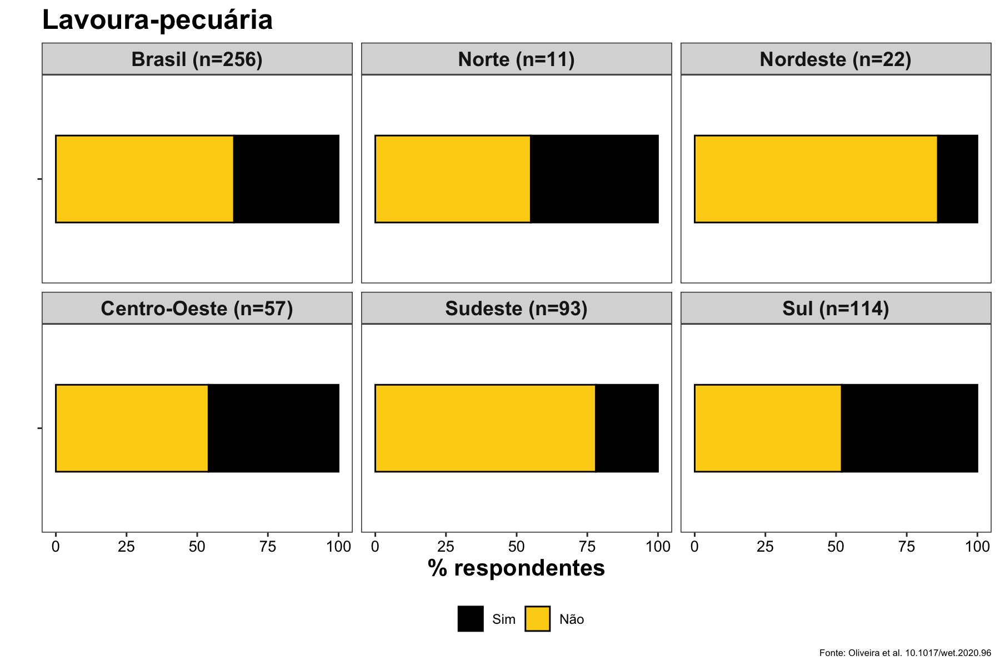
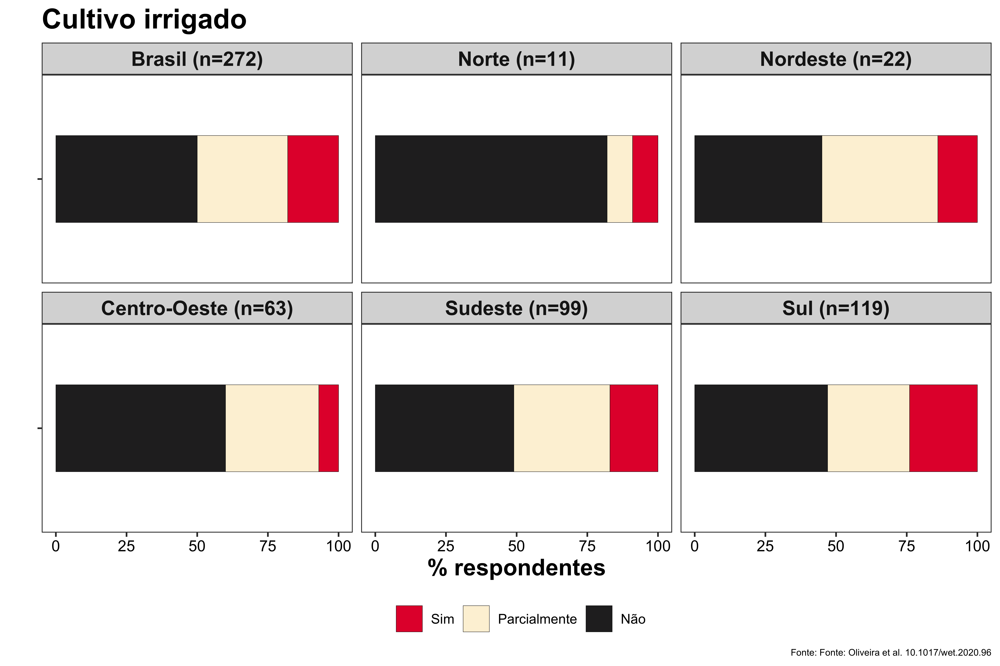
Nessa segunda parte estão as perguntas e respostas relacionadas ao manejo de plantas daninhas:

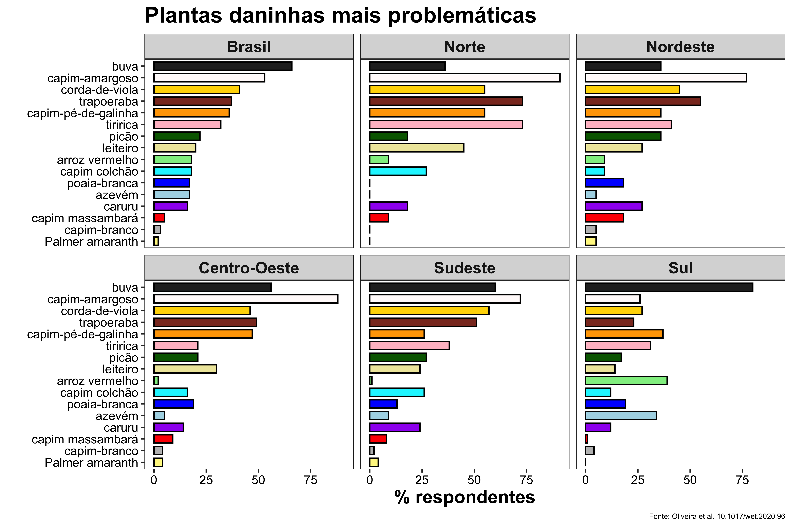
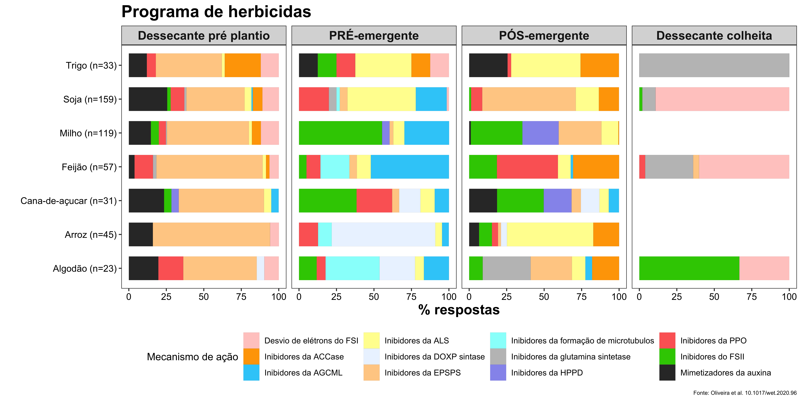
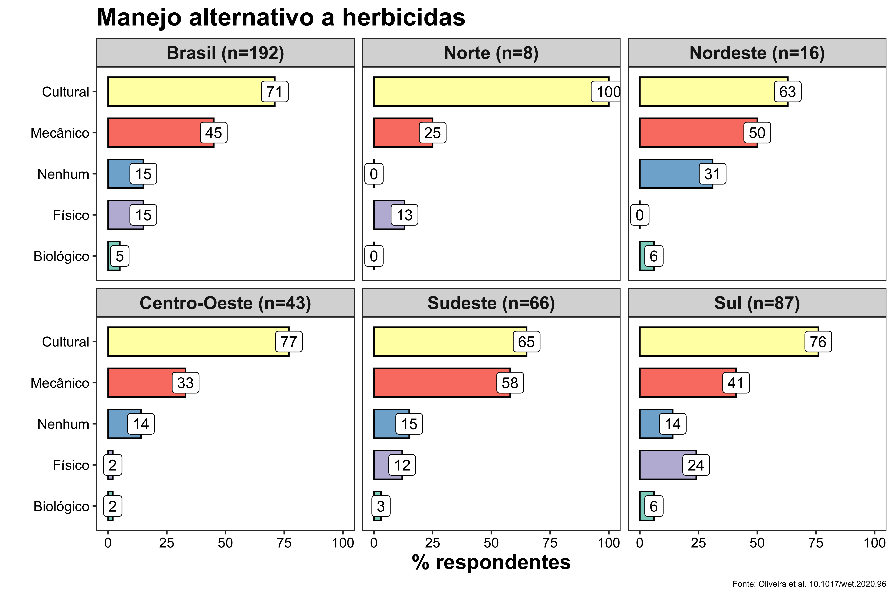
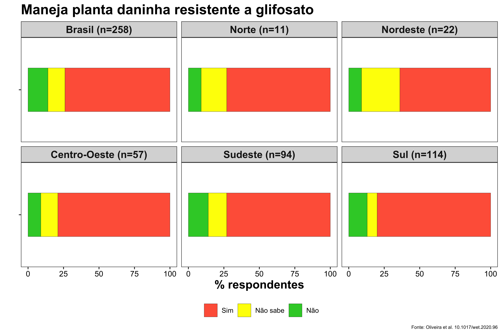
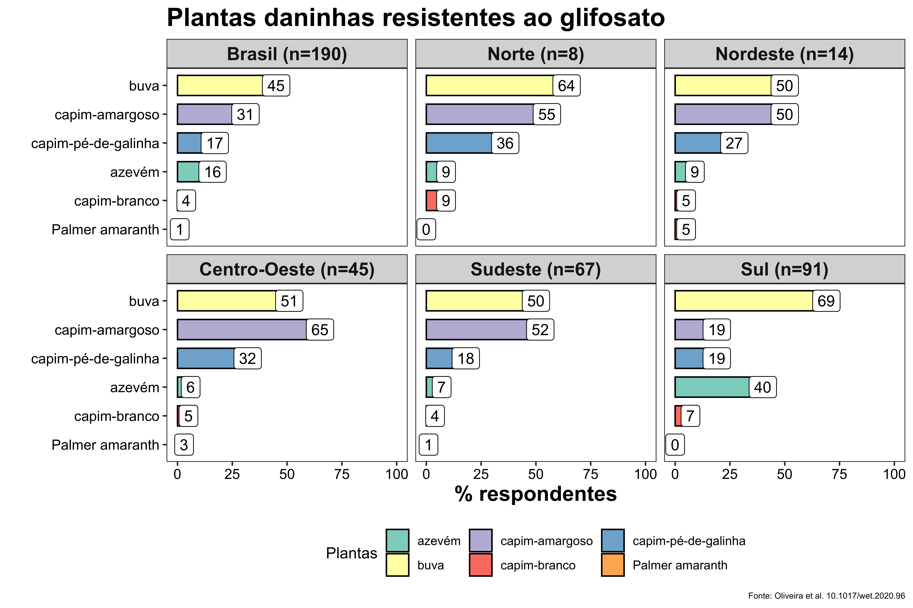
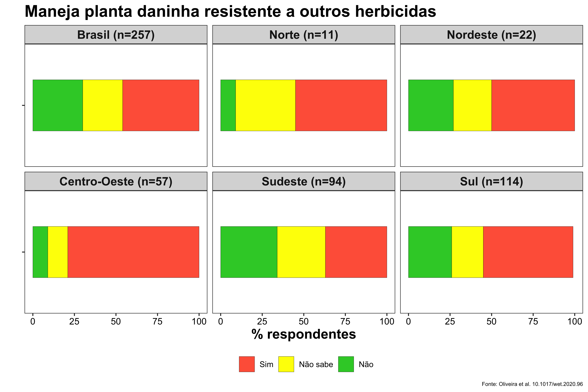

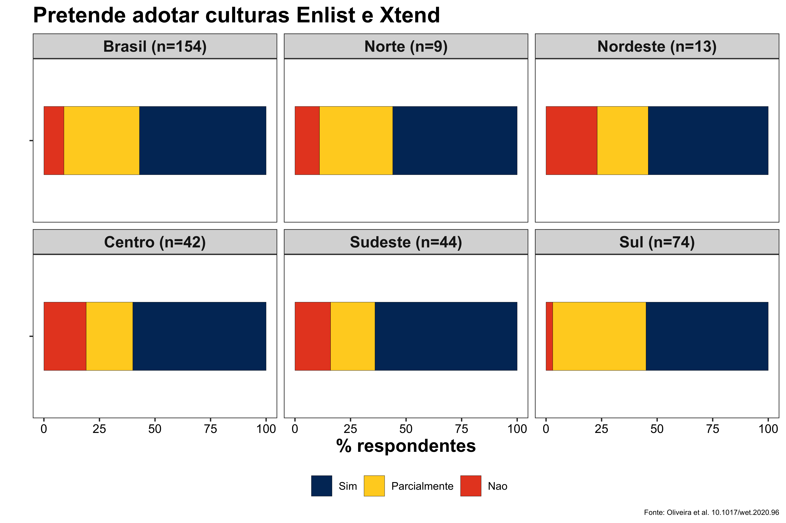
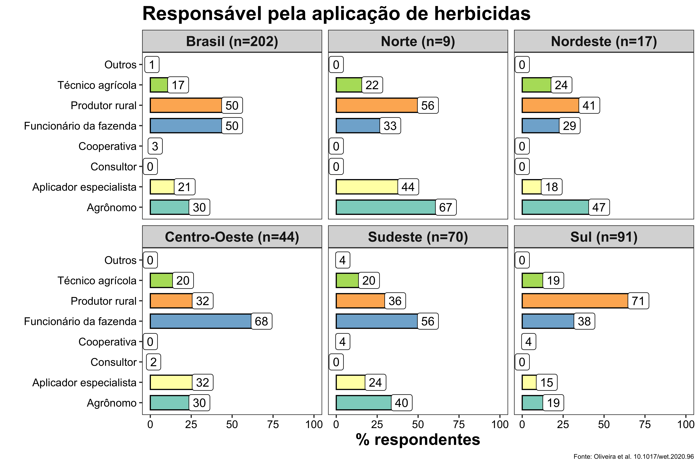
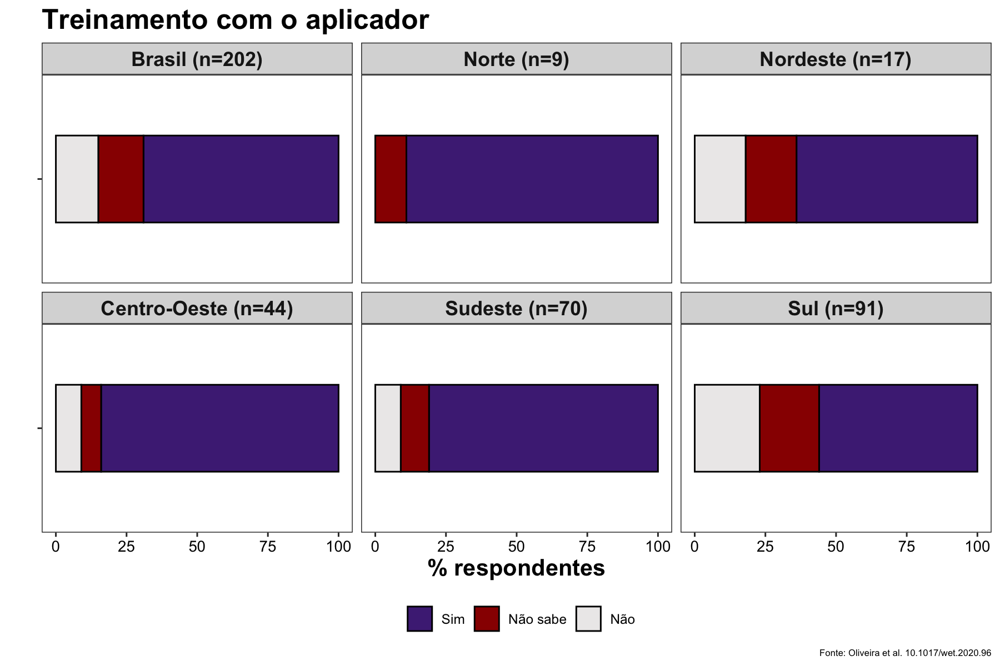
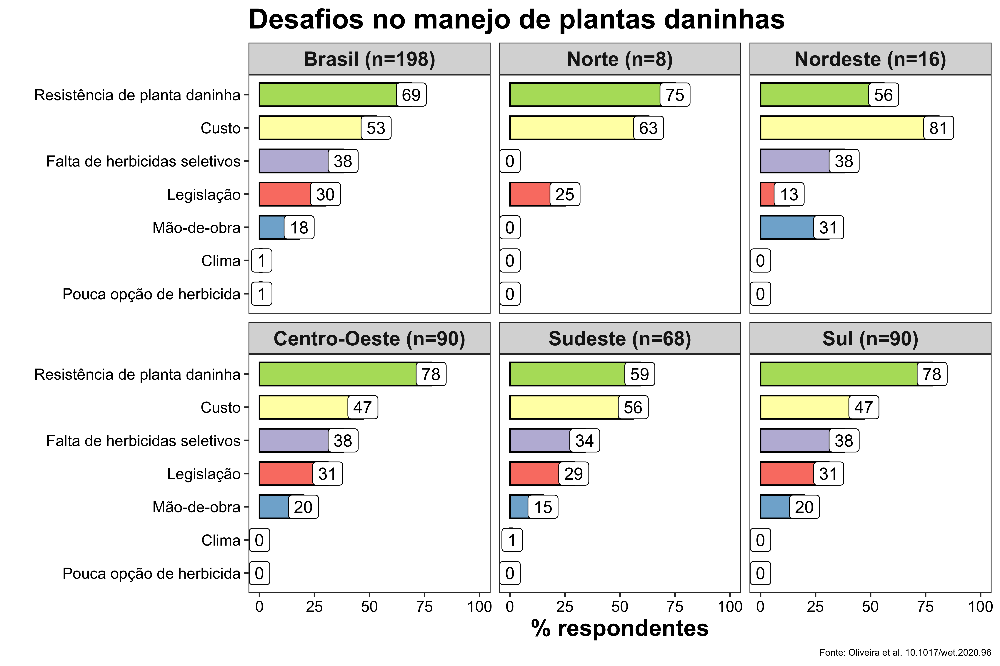
Se você chegou até o fim pode também ter o interesse de citar nosso trabalho. Fique a vontade para usar nossas figuras. Mas não esqueça de citar:
Oliveira MC, Lencina A, Ulguim A, Werle R (2020) Assessment of crop and weed management strategies prior to introduction of auxin-resistant crops in Brazil. Weed Technology, no prelo (DOI: https://doi.org/10.1017/wet.2020.96)
Texto escrito por Maxwel Coura Oliveira e Rodrigo Werle